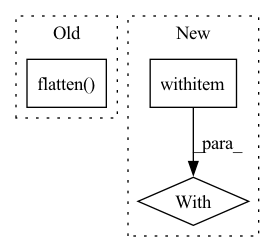

Pattern ID :36215
Before Change
if self.auxiliary:
isinstance(self._model.auxiliary_head, AuxiliaryHead)
feats, feats_aux = self._model.features.forward(self._model.normalize(_input), auxiliary=True)
logits = self._model.classifier(self._model.flatten( self._model.pool(feats)) )
logits_aux = self._model.auxiliary_head(feats_aux)
return super().loss(_output=logits, _label=_label) \
+ self.auxiliary_weight * super().loss(_output=logits_aux, _label=_label)After Change
if self.auxiliary:
assert isinstance(self._model.auxiliary_head, AuxiliaryHead)
if amp:
with torch .cuda.amp.autocast():
return self.loss_with_aux(_input, _label, _output)
return self.loss_with_aux(_input, _label, _output)
else:
return super().loss(_input, _label, _output, *kwargs)In pattern: SUPERPATTERN
Frequency: 3
Non-data size: 3
Instances Fragment ID: 102655528
Project Name: ain-soph/trojanzoo
Commit Name: 60189e04e85518439a94d1addd0c30f826c39fed
Time: 2021-03-09
Author: ain-soph@live.com
File Name: trojanvision/models/darts.py
M Class Name: DARTS
N Class Name: DARTS
M Method Name: loss(5)
N Method Name: loss(4)
M Parent Class: ImageModel
N Parent Class: ImageModel
M File Name: trojanvision/models/darts.py
N File Name: trojanvision/models/darts.py
M Start Line: 64
M End Line: 69
N Start Line: 65
N End Line: 71
Before Change
)
def _len_last_layer(self, n_channels, input_size):
return len(self.feature_extractor(
torch.Tensor(1, 1, n_channels, input_size)).flatten() )
def forward(self, x):
Forward pass.After Change
def _len_last_layer(self, n_channels, input_size):
self.feature_extractor.eval()
with torch .no_grad():
out = self.feature_extractor(
torch.Tensor(1, 1, n_channels, input_size))
self.feature_extractor.train()
return len(out.flatten()) Fragment ID: 102655529
Project Name: braindecode/braindecode
Commit Name: 46462ecfa7e2d123002a8a3e44ae65d3b097b07a
Time: 2021-06-03
Author: hubert.jbanville@gmail.com
File Name: braindecode/models/sleep_stager_chambon_2018.py
M Class Name: SleepStagerChambon2018
N Class Name: SleepStagerChambon2018
M Method Name: _len_last_layer(3)
N Method Name: _len_last_layer(3)
M Parent Class: nn.Module
N Parent Class: nn.Module
M File Name: braindecode/models/sleep_stager_chambon_2018.py
N File Name: braindecode/models/sleep_stager_chambon_2018.py
M Start Line: 88
M End Line: 89
N Start Line: 88
N End Line: 93
Before Change
// input should be (seq_len, batch, input_size)
output, h_n = self.rnn(x.unsqueeze(1))
output = self.fc(output.flatten() )
// print(output)
// return torch.mean(output, dim=0)
return outputAfter Change
// so as to reflect a batch_size = 1
st_maps = st_maps.unsqueeze(0)
for t in range(st_maps.size(1)):
with torch .no_grad():
x = self.resnet18(st_maps[:, t, :, :, :])
// collapse dimensions to BSx512 (resnet o/p)
x = x.view(x.size(0), -1)
// output dim: BSx1 Fragment ID: 102655527
Project Name: anweshcr7/rhythmnet
Commit Name: 5486b317570359a6ab1971196350ee70894b19db
Time: 2021-02-02
Author: anwesh.marwade@beyondsports.nl
File Name: src/models/rhythmNet.py
M Class Name: RhythmNet
N Class Name: RhythmNet
M Method Name: forward(3)
N Method Name: forward(3)
M Parent Class: nn.Module
N Parent Class: nn.Module
M File Name: src/models/rhythmNet.py
N File Name: src/models/rhythmNet.py
M Start Line: 25
M End Line: 32
N Start Line: 32
N End Line: 48